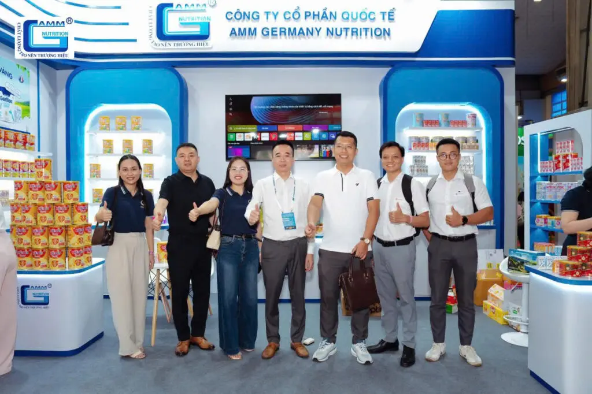
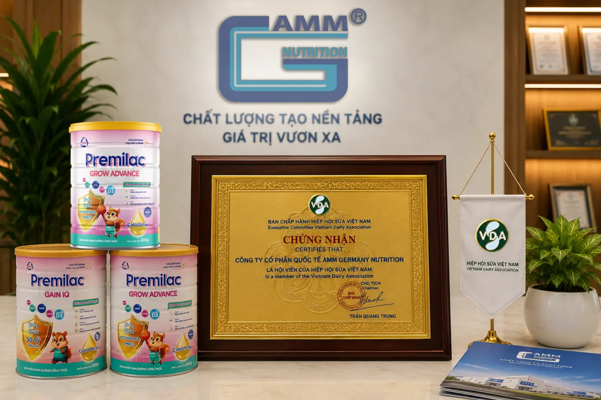
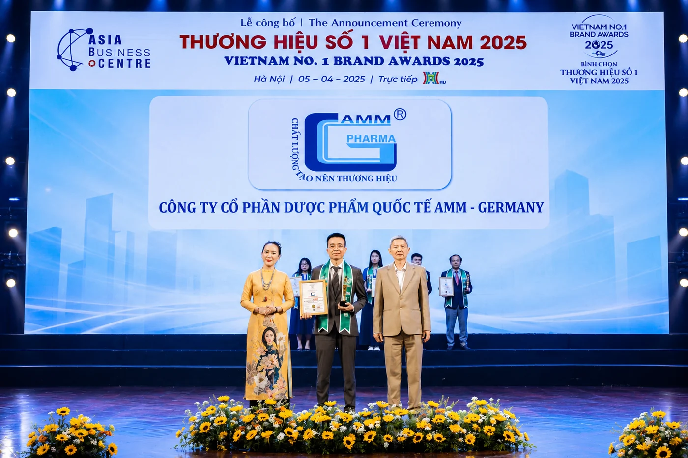
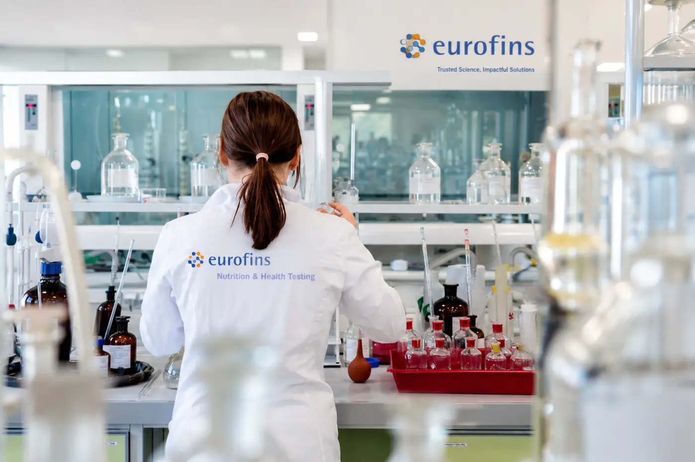

ABIC
Tăng cường nền tảng trách nhiệm sản phẩm
Hợp tác cùng ABIC góp phần củng cố cam kết đồng hành dài hạn với đối tác và người tiêu dùng.
Xem dấu ấn hợp tác →Tin tức & dấu ấn
Cập nhật hoạt động nghiên cứu, công nghệ, chất lượng và hợp tác – những mảnh ghép phản ánh hành trình phát triển bền vững của AMM Germany Nutrition.
Video recap
Những ngày triển lãm đã khép lại, nhưng hành trình gặp gỡ khách hàng, đối tác và chia sẻ các giải pháp dinh dưỡng tại gian hàng AMM vẫn để lại nhiều khoảnh khắc đáng nhớ.
Video recap ghi lại không khí kết nối, trải nghiệm sản phẩm và những cuộc trao đổi chuyên môn trong suốt sự kiện.

Tin tức & dấu ấn
Các dấu ấn về trách nhiệm sản phẩm, kết nối chuyên ngành, uy tín thương hiệu và kiểm nghiệm độc lập.
Hợp tác cùng ABIC góp phần củng cố cam kết đồng hành dài hạn với đối tác và người tiêu dùng.
Xem dấu ấn hợp tác →
Dấu mốc mở rộng kết nối chuyên môn và đóng góp vào sự phát triển bền vững của ngành sữa.
Xem xác nhận từ Hiệp hội →
Ghi nhận nỗ lực xây dựng nền tảng nghiên cứu, sản xuất và kiểm soát chất lượng trong lĩnh vực dinh dưỡng.
Xem toàn bộ dấu ấn →
Kết nối năng lực phân tích và đối chiếu chỉ tiêu giúp tăng cường cơ sở kiểm soát chất lượng sản phẩm.
Xem hệ thống chất lượng →Chủ đề quan tâm
Từ nghiên cứu nhu cầu đến mẫu thử và sản phẩm hoàn thiện.
Khám phá →Hạ tầng sữa bột, sữa nước và đối tác công nghệ toàn cầu.
Khám phá →QA/QC, truy xuất, lưu mẫu và nền tảng ISO 22000:2018.
Khám phá →Giải pháp trọn gói cho thương hiệu và sản phẩm dinh dưỡng.
Khám phá →Chia sẻ định hướng của bạn và nhận tư vấn từ đội ngũ nghiên cứu – sản xuất AMM.